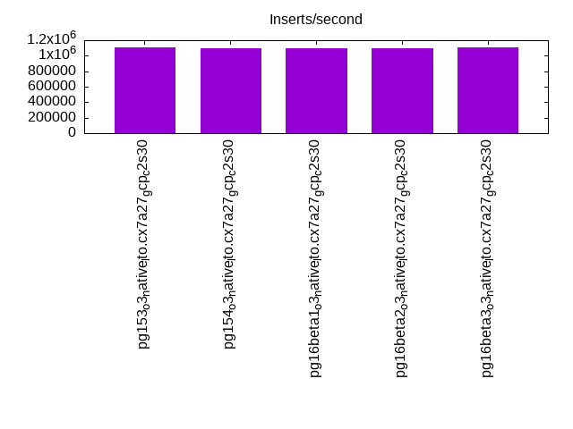
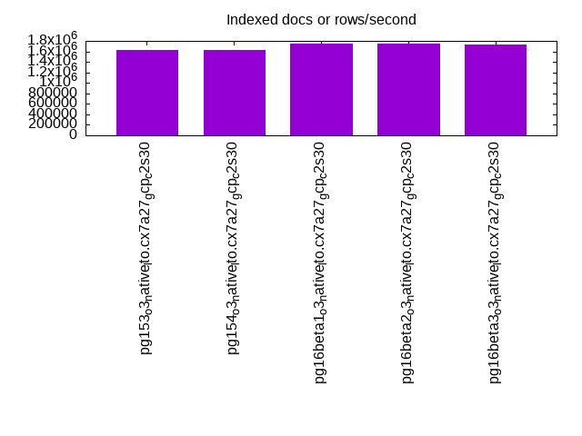
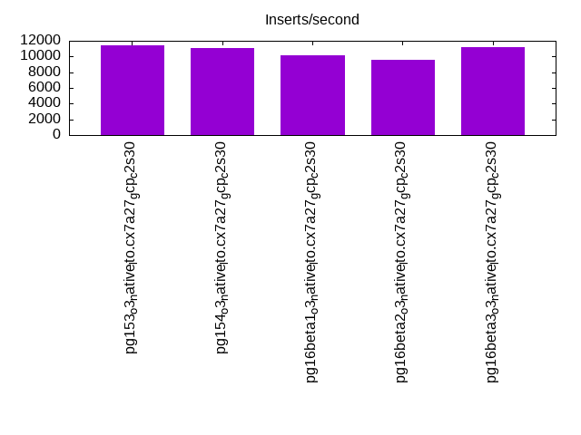
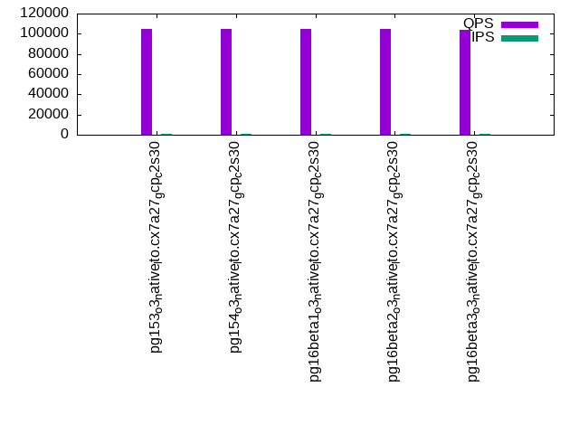
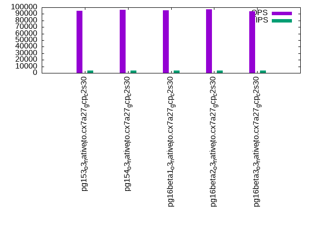
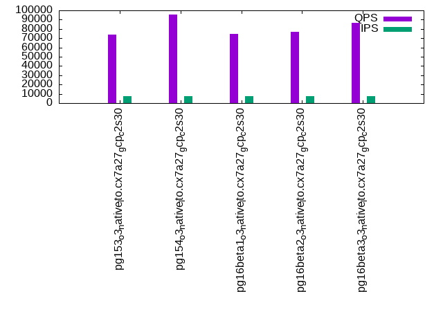

This is a report for the insert benchmark with 4000M docs and 8 client(s). It is generated by scripts (bash, awk, sed) and Tufte might not be impressed. An overview of the insert benchmark is here and a short update is here. Below, by DBMS, I mean DBMS+version.config. An example is my8020.c10b40 where my means MySQL, 8020 is version 8.0.20 and c10b40 is the name for the configuration file.
The test server is a c2-standard-30 with 15 cores, hyperthreads disabled, 120G RAM and XFS with SW RAID 0 across 4 NVMe SSD. The benchmark was run with 8 clients and there were 1 or 3 connections per client (1 for queries or inserts without rate limits, 1+1 for rate limited inserts+deletes). It uses 8 tables, 1 per client. It loads 500M rows per table without secondary indexes, creates secondary indexes, then inserts 40M rows per table with a delete per insert to avoid growing the table. It then does 3 read+write tests for 3600s each that do queries as fast as possible with 100, 500 and then 1000 inserts/second/client concurrent with the queries. There are also deletes to match the inserts and avoid growing the table. The database is larger than memory. Clients and the DBMS share one server. The per-database configs are in the per-database subdirectories here.
The tested DBMS are:
The numbers are inserts/s for l.i0 and l.i1, indexed docs (or rows) /s for l.x and queries/s for q*.2. The values are the average rate over the entire test for inserts (IPS) and queries (QPS). The range of values for IPS and QPS is split into 3 parts: bottom 25%, middle 50%, top 25%. Values in the bottom 25% have a red background, values in the top 25% have a green background and values in the middle have no color. A gray background is used for values that can be ignored because the DBMS did not sustain the target insert rate. Red backgrounds are not used when the minimum value is within 80% of the max value.
| dbms | l.i0 | l.x | l.i1 | q100.1 | q500.1 | q1000.1 |
|---|---|---|---|---|---|---|
| pg153_o3_native_lto.cx7a27_gcp_c2s30 | 1110802 | 1624736 | 11426 | 104467 | 94699 | 74007 |
| pg154_o3_native_lto.cx7a27_gcp_c2s30 | 1101322 | 1622759 | 11103 | 104603 | 96564 | 95302 |
| pg16beta1_o3_native_lto.cx7a27_gcp_c2s30 | 1091405 | 1739930 | 10124 | 104678 | 95672 | 74696 |
| pg16beta2_o3_native_lto.cx7a27_gcp_c2s30 | 1099505 | 1755200 | 9564 | 104990 | 97299 | 77157 |
| pg16beta3_o3_native_lto.cx7a27_gcp_c2s30 | 1109570 | 1734649 | 11241 | 103679 | 94216 | 86676 |
This table has relative throughput, throughput for the DBMS relative to the DBMS in the first line, using the absolute throughput from the previous table. Values less than 0.95 have a yellow background. Values greater than 1.05 have a blue background.
| dbms | l.i0 | l.x | l.i1 | q100.1 | q500.1 | q1000.1 |
|---|---|---|---|---|---|---|
| pg153_o3_native_lto.cx7a27_gcp_c2s30 | 1.00 | 1.00 | 1.00 | 1.00 | 1.00 | 1.00 |
| pg154_o3_native_lto.cx7a27_gcp_c2s30 | 0.99 | 1.00 | 0.97 | 1.00 | 1.02 | 1.29 |
| pg16beta1_o3_native_lto.cx7a27_gcp_c2s30 | 0.98 | 1.07 | 0.89 | 1.00 | 1.01 | 1.01 |
| pg16beta2_o3_native_lto.cx7a27_gcp_c2s30 | 0.99 | 1.08 | 0.84 | 1.01 | 1.03 | 1.04 |
| pg16beta3_o3_native_lto.cx7a27_gcp_c2s30 | 1.00 | 1.07 | 0.98 | 0.99 | 0.99 | 1.17 |
This lists the average rate of inserts/s for the tests that do inserts concurrent with queries. For such tests the query rate is listed in the table above. The read+write tests are setup so that the insert rate should match the target rate every second. Cells that are not at least 95% of the target have a red background to indicate a failure to satisfy the target.
| dbms | q100.1 | q500.1 | q1000.1 |
|---|---|---|---|
| pg153_o3_native_lto.cx7a27_gcp_c2s30 | 798 | 3987 | 7811 |
| pg154_o3_native_lto.cx7a27_gcp_c2s30 | 797 | 3988 | 7209 |
| pg16beta1_o3_native_lto.cx7a27_gcp_c2s30 | 797 | 3988 | 7822 |
| pg16beta2_o3_native_lto.cx7a27_gcp_c2s30 | 798 | 3987 | 7617 |
| pg16beta3_o3_native_lto.cx7a27_gcp_c2s30 | 797 | 3988 | 7486 |
| target | 800 | 4000 | 8000 |
l.i0: load without secondary indexes. Graphs for performance per 1-second interval are here.
Average throughput:
Insert response time histogram: each cell has the percentage of responses that take <= the time in the header and max is the max response time in seconds. For the max column values in the top 25% of the range have a red background and in the bottom 25% of the range have a green background. The red background is not used when the min value is within 80% of the max value.
| dbms | 256us | 1ms | 4ms | 16ms | 64ms | 256ms | 1s | 4s | 16s | gt | max |
|---|---|---|---|---|---|---|---|---|---|---|---|
| pg153_o3_native_lto.cx7a27_gcp_c2s30 | 97.643 | 2.315 | 0.029 | 0.005 | 0.008 | 0.001 | 0.662 | ||||
| pg154_o3_native_lto.cx7a27_gcp_c2s30 | 97.550 | 2.408 | 0.028 | 0.005 | 0.009 | 0.001 | 0.736 | ||||
| pg16beta1_o3_native_lto.cx7a27_gcp_c2s30 | 97.414 | 2.545 | 0.027 | 0.005 | 0.008 | 0.001 | 0.604 | ||||
| pg16beta2_o3_native_lto.cx7a27_gcp_c2s30 | 97.593 | 2.366 | 0.029 | 0.005 | 0.007 | 0.001 | 0.561 | ||||
| pg16beta3_o3_native_lto.cx7a27_gcp_c2s30 | 97.519 | 2.444 | 0.027 | 0.005 | 0.006 | nonzero | 0.803 |
Performance metrics for the DBMS listed above. Some are normalized by throughput, others are not. Legend for results is here.
ips qps rps rmbps wps wmbps rpq rkbpq wpi wkbpi csps cpups cspq cpupq dbgb1 dbgb2 rss maxop p50 p99 tag 1110802 0 540 4.3 1385.9 253.5 0.000 0.004 0.001 0.234 92534 84.6 0.083 11 382.7 452.8 9.9 0.662 142424 81810 4000m.pg153_o3_native_lto.cx7a27_gcp_c2s30 1101322 0 550 4.3 1364.3 250.3 0.000 0.004 0.001 0.233 91830 84.3 0.083 11 382.7 452.8 17.8 0.736 141645 71622 4000m.pg154_o3_native_lto.cx7a27_gcp_c2s30 1091405 0 532 4.2 1367.4 249.4 0.000 0.004 0.001 0.234 91678 83.9 0.084 12 382.7 452.8 13.3 0.604 140346 70224 4000m.pg16beta1_o3_native_lto.cx7a27_gcp_c2s30 1099505 0 548 4.3 1375.2 251.8 0.000 0.004 0.001 0.235 91448 84.4 0.083 12 382.7 452.8 5.4 0.561 141144 75418 4000m.pg16beta2_o3_native_lto.cx7a27_gcp_c2s30 1109570 0 549 4.3 1373.8 254.3 0.000 0.004 0.001 0.235 91674 84.8 0.083 11 382.7 452.8 9.2 0.803 141946 92935 4000m.pg16beta3_o3_native_lto.cx7a27_gcp_c2s30
l.x: create secondary indexes.
Average throughput:
Performance metrics for the DBMS listed above. Some are normalized by throughput, others are not. Legend for results is here.
ips qps rps rmbps wps wmbps rpq rkbpq wpi wkbpi csps cpups cspq cpupq dbgb1 dbgb2 rss maxop p50 p99 tag 1624736 0 3555 768.1 1244.9 277.6 0.002 0.484 0.001 0.175 13241 37.1 0.008 3 735.2 804.7 56.7 0.002 NA NA 4000m.pg153_o3_native_lto.cx7a27_gcp_c2s30 1622759 0 3511 770.1 1243.1 280.0 0.002 0.486 0.001 0.177 13064 36.9 0.008 3 735.2 805.2 56.9 0.002 NA NA 4000m.pg154_o3_native_lto.cx7a27_gcp_c2s30 1739930 0 2974 687.3 1330.4 300.3 0.002 0.404 0.001 0.177 18486 39.0 0.011 3 735.2 804.8 57.2 0.002 NA NA 4000m.pg16beta1_o3_native_lto.cx7a27_gcp_c2s30 1755200 0 3008 697.7 1344.8 300.8 0.002 0.407 0.001 0.175 18698 38.8 0.011 3 735.2 804.9 56.9 0.002 NA NA 4000m.pg16beta2_o3_native_lto.cx7a27_gcp_c2s30 1734649 0 3016 699.7 1321.4 296.4 0.002 0.413 0.001 0.175 19227 38.7 0.011 3 735.2 804.9 56.8 0.002 NA NA 4000m.pg16beta3_o3_native_lto.cx7a27_gcp_c2s30
l.i1: continue load after secondary indexes created. Graphs for performance per 1-second interval are here.
Average throughput:
Insert response time histogram: each cell has the percentage of responses that take <= the time in the header and max is the max response time in seconds. For the max column values in the top 25% of the range have a red background and in the bottom 25% of the range have a green background. The red background is not used when the min value is within 80% of the max value.
| dbms | 256us | 1ms | 4ms | 16ms | 64ms | 256ms | 1s | 4s | 16s | gt | max |
|---|---|---|---|---|---|---|---|---|---|---|---|
| pg153_o3_native_lto.cx7a27_gcp_c2s30 | 47.402 | 33.854 | 18.734 | 0.010 | 0.001 | 0.771 | |||||
| pg154_o3_native_lto.cx7a27_gcp_c2s30 | 30.015 | 40.775 | 29.198 | 0.011 | 0.001 | nonzero | 1.092 | ||||
| pg16beta1_o3_native_lto.cx7a27_gcp_c2s30 | 32.667 | 44.137 | 23.182 | 0.013 | 0.001 | nonzero | 1.463 | ||||
| pg16beta2_o3_native_lto.cx7a27_gcp_c2s30 | 40.625 | 32.180 | 27.187 | 0.007 | 0.001 | 0.858 | |||||
| pg16beta3_o3_native_lto.cx7a27_gcp_c2s30 | 37.237 | 40.906 | 21.842 | 0.013 | 0.001 | nonzero | 1.138 |
Delete response time histogram: each cell has the percentage of responses that take <= the time in the header and max is the max response time in seconds. For the max column values in the top 25% of the range have a red background and in the bottom 25% of the range have a green background. The red background is not used when the min value is within 80% of the max value.
| dbms | 256us | 1ms | 4ms | 16ms | 64ms | 256ms | 1s | 4s | 16s | gt | max |
|---|---|---|---|---|---|---|---|---|---|---|---|
| pg153_o3_native_lto.cx7a27_gcp_c2s30 | 67.971 | 1.769 | 1.193 | 3.606 | 12.284 | 13.163 | 0.015 | 0.408 | |||
| pg154_o3_native_lto.cx7a27_gcp_c2s30 | 64.004 | 11.090 | 0.933 | 3.329 | 13.288 | 6.972 | 0.382 | 0.447 | |||
| pg16beta1_o3_native_lto.cx7a27_gcp_c2s30 | 62.647 | 4.953 | 0.989 | 3.475 | 11.140 | 16.795 | 0.001 | 0.497 | |||
| pg16beta2_o3_native_lto.cx7a27_gcp_c2s30 | 64.194 | 7.603 | 0.995 | 3.253 | 10.434 | 13.519 | 0.001 | 0.268 | |||
| pg16beta3_o3_native_lto.cx7a27_gcp_c2s30 | 66.693 | 6.347 | 0.925 | 3.230 | 11.872 | 10.934 | nonzero | 0.391 |
Performance metrics for the DBMS listed above. Some are normalized by throughput, others are not. Legend for results is here.
ips qps rps rmbps wps wmbps rpq rkbpq wpi wkbpi csps cpups cspq cpupq dbgb1 dbgb2 rss maxop p50 p99 tag 11426 0 7741 92.6 9964.0 143.6 0.677 8.297 0.872 12.869 20934 41.5 1.832 545 773.3 843.4 50.5 0.771 250 200 4000m.pg153_o3_native_lto.cx7a27_gcp_c2s30 11103 0 10044 116.0 13326.3 177.8 0.905 10.697 1.200 16.402 25391 35.0 2.287 473 774.3 844.4 41.7 1.092 250 200 4000m.pg154_o3_native_lto.cx7a27_gcp_c2s30 10124 0 8548 99.0 11530.6 158.6 0.844 10.014 1.139 16.042 21884 38.2 2.162 566 772.7 839.6 71.1 1.463 250 200 4000m.pg16beta1_o3_native_lto.cx7a27_gcp_c2s30 9564 0 7810 86.3 9878.0 129.8 0.817 9.239 1.033 13.899 20211 37.6 2.113 590 772.3 838.3 69.7 0.858 350 200 4000m.pg16beta2_o3_native_lto.cx7a27_gcp_c2s30 11241 0 9193 102.9 11887.7 158.7 0.818 9.372 1.058 14.457 23724 37.5 2.111 500 773.9 843.9 67.4 1.138 250 200 4000m.pg16beta3_o3_native_lto.cx7a27_gcp_c2s30
q100.1: range queries with 100 insert/s per client. Graphs for performance per 1-second interval are here.
Average throughput:
Query response time histogram: each cell has the percentage of responses that take <= the time in the header and max is the max response time in seconds. For max values in the top 25% of the range have a red background and in the bottom 25% of the range have a green background. The red background is not used when the min value is within 80% of the max value.
| dbms | 256us | 1ms | 4ms | 16ms | 64ms | 256ms | 1s | 4s | 16s | gt | max |
|---|---|---|---|---|---|---|---|---|---|---|---|
| pg153_o3_native_lto.cx7a27_gcp_c2s30 | 99.825 | 0.172 | 0.003 | nonzero | nonzero | nonzero | 0.113 | ||||
| pg154_o3_native_lto.cx7a27_gcp_c2s30 | 99.794 | 0.204 | 0.002 | nonzero | nonzero | nonzero | 0.201 | ||||
| pg16beta1_o3_native_lto.cx7a27_gcp_c2s30 | 99.855 | 0.144 | 0.001 | nonzero | nonzero | nonzero | 0.099 | ||||
| pg16beta2_o3_native_lto.cx7a27_gcp_c2s30 | 99.839 | 0.159 | 0.001 | nonzero | nonzero | 0.025 | |||||
| pg16beta3_o3_native_lto.cx7a27_gcp_c2s30 | 99.817 | 0.182 | 0.001 | nonzero | 0.014 |
Insert response time histogram: each cell has the percentage of responses that take <= the time in the header and max is the max response time in seconds. For max values in the top 25% of the range have a red background and in the bottom 25% of the range have a green background. The red background is not used when the min value is within 80% of the max value.
| dbms | 256us | 1ms | 4ms | 16ms | 64ms | 256ms | 1s | 4s | 16s | gt | max |
|---|---|---|---|---|---|---|---|---|---|---|---|
| pg153_o3_native_lto.cx7a27_gcp_c2s30 | 10.556 | 7.234 | 82.188 | 0.023 | 0.104 | ||||||
| pg154_o3_native_lto.cx7a27_gcp_c2s30 | 6.099 | 12.056 | 81.816 | 0.030 | 0.249 | ||||||
| pg16beta1_o3_native_lto.cx7a27_gcp_c2s30 | 1.642 | 17.427 | 80.925 | 0.005 | 0.082 | ||||||
| pg16beta2_o3_native_lto.cx7a27_gcp_c2s30 | 3.722 | 12.892 | 83.380 | 0.005 | 0.100 | ||||||
| pg16beta3_o3_native_lto.cx7a27_gcp_c2s30 | 9.569 | 5.214 | 85.214 | 0.003 | 0.067 |
Delete response time histogram: each cell has the percentage of responses that take <= the time in the header and max is the max response time in seconds. For max values in the top 25% of the range have a red background and in the bottom 25% of the range have a green background. The red background is not used when the min value is within 80% of the max value.
| dbms | 256us | 1ms | 4ms | 16ms | 64ms | 256ms | 1s | 4s | 16s | gt | max |
|---|---|---|---|---|---|---|---|---|---|---|---|
| pg153_o3_native_lto.cx7a27_gcp_c2s30 | 41.215 | 40.707 | 17.161 | 0.915 | 0.002 | 0.017 | |||||
| pg154_o3_native_lto.cx7a27_gcp_c2s30 | 31.759 | 39.799 | 25.861 | 2.582 | 0.014 | ||||||
| pg16beta1_o3_native_lto.cx7a27_gcp_c2s30 | 33.061 | 37.995 | 26.714 | 2.227 | 0.003 | 0.024 | |||||
| pg16beta2_o3_native_lto.cx7a27_gcp_c2s30 | 30.321 | 31.731 | 34.498 | 3.450 | 0.013 | ||||||
| pg16beta3_o3_native_lto.cx7a27_gcp_c2s30 | 39.625 | 41.490 | 17.335 | 1.547 | 0.003 | 0.017 |
Performance metrics for the DBMS listed above. Some are normalized by throughput, others are not. Legend for results is here.
ips qps rps rmbps wps wmbps rpq rkbpq wpi wkbpi csps cpups cspq cpupq dbgb1 dbgb2 rss maxop p50 p99 tag 798 104467 1599 13.9 1719.1 24.2 0.015 0.136 2.156 31.133 400895 52.9 3.838 76 773.4 843.4 71.0 0.113 13074 6936 4000m.pg153_o3_native_lto.cx7a27_gcp_c2s30 797 104603 1658 14.3 1911.9 22.3 0.016 0.140 2.398 28.644 401525 53.0 3.839 76 774.3 844.4 71.0 0.201 13185 12930 4000m.pg154_o3_native_lto.cx7a27_gcp_c2s30 797 104678 1484 12.7 1552.0 21.2 0.014 0.124 1.947 27.187 401350 53.0 3.834 76 772.8 842.8 71.0 0.099 13153 11347 4000m.pg16beta1_o3_native_lto.cx7a27_gcp_c2s30 798 104990 1532 13.1 1300.2 19.7 0.015 0.128 1.630 25.244 402597 52.9 3.835 76 772.5 842.5 71.0 0.025 13217 10889 4000m.pg16beta2_o3_native_lto.cx7a27_gcp_c2s30 797 103679 1605 13.8 1508.2 19.3 0.015 0.136 1.892 24.819 397961 52.9 3.838 77 774.0 844.0 71.0 0.014 12994 11576 4000m.pg16beta3_o3_native_lto.cx7a27_gcp_c2s30
q500.1: range queries with 500 insert/s per client. Graphs for performance per 1-second interval are here.
Average throughput:
Query response time histogram: each cell has the percentage of responses that take <= the time in the header and max is the max response time in seconds. For max values in the top 25% of the range have a red background and in the bottom 25% of the range have a green background. The red background is not used when the min value is within 80% of the max value.
| dbms | 256us | 1ms | 4ms | 16ms | 64ms | 256ms | 1s | 4s | 16s | gt | max |
|---|---|---|---|---|---|---|---|---|---|---|---|
| pg153_o3_native_lto.cx7a27_gcp_c2s30 | 99.875 | 0.121 | 0.003 | nonzero | nonzero | 0.023 | |||||
| pg154_o3_native_lto.cx7a27_gcp_c2s30 | 99.853 | 0.143 | 0.004 | 0.001 | nonzero | 0.024 | |||||
| pg16beta1_o3_native_lto.cx7a27_gcp_c2s30 | 99.836 | 0.161 | 0.003 | nonzero | nonzero | 0.023 | |||||
| pg16beta2_o3_native_lto.cx7a27_gcp_c2s30 | 99.823 | 0.173 | 0.004 | 0.001 | nonzero | 0.023 | |||||
| pg16beta3_o3_native_lto.cx7a27_gcp_c2s30 | 99.841 | 0.156 | 0.003 | nonzero | nonzero | 0.026 |
Insert response time histogram: each cell has the percentage of responses that take <= the time in the header and max is the max response time in seconds. For max values in the top 25% of the range have a red background and in the bottom 25% of the range have a green background. The red background is not used when the min value is within 80% of the max value.
| dbms | 256us | 1ms | 4ms | 16ms | 64ms | 256ms | 1s | 4s | 16s | gt | max |
|---|---|---|---|---|---|---|---|---|---|---|---|
| pg153_o3_native_lto.cx7a27_gcp_c2s30 | 0.048 | 8.838 | 91.114 | 0.050 | |||||||
| pg154_o3_native_lto.cx7a27_gcp_c2s30 | 11.736 | 88.264 | 0.056 | ||||||||
| pg16beta1_o3_native_lto.cx7a27_gcp_c2s30 | 4.282 | 95.718 | 0.057 | ||||||||
| pg16beta2_o3_native_lto.cx7a27_gcp_c2s30 | 6.983 | 93.015 | 0.002 | 0.112 | |||||||
| pg16beta3_o3_native_lto.cx7a27_gcp_c2s30 | 0.078 | 5.585 | 94.336 | 0.057 |
Delete response time histogram: each cell has the percentage of responses that take <= the time in the header and max is the max response time in seconds. For max values in the top 25% of the range have a red background and in the bottom 25% of the range have a green background. The red background is not used when the min value is within 80% of the max value.
| dbms | 256us | 1ms | 4ms | 16ms | 64ms | 256ms | 1s | 4s | 16s | gt | max |
|---|---|---|---|---|---|---|---|---|---|---|---|
| pg153_o3_native_lto.cx7a27_gcp_c2s30 | 64.860 | 9.978 | 2.840 | 14.073 | 8.248 | 0.032 | |||||
| pg154_o3_native_lto.cx7a27_gcp_c2s30 | 42.231 | 10.166 | 2.408 | 23.402 | 21.792 | nonzero | 0.067 | ||||
| pg16beta1_o3_native_lto.cx7a27_gcp_c2s30 | 64.466 | 10.037 | 4.254 | 15.252 | 5.992 | 0.034 | |||||
| pg16beta2_o3_native_lto.cx7a27_gcp_c2s30 | 38.389 | 9.646 | 3.501 | 26.068 | 22.397 | nonzero | 0.064 | ||||
| pg16beta3_o3_native_lto.cx7a27_gcp_c2s30 | 65.655 | 11.931 | 2.299 | 12.721 | 7.395 | 0.029 |
Performance metrics for the DBMS listed above. Some are normalized by throughput, others are not. Legend for results is here.
ips qps rps rmbps wps wmbps rpq rkbpq wpi wkbpi csps cpups cspq cpupq dbgb1 dbgb2 rss maxop p50 p99 tag 3987 94699 5886 49.1 7390.2 85.9 0.062 0.530 1.854 22.066 367285 57.4 3.878 91 773.6 843.7 71.0 0.023 11833 11395 4000m.pg153_o3_native_lto.cx7a27_gcp_c2s30 3988 96564 5892 49.0 7395.9 82.8 0.061 0.519 1.855 21.273 361761 59.0 3.746 92 774.5 844.5 71.0 0.024 12019 11315 4000m.pg154_o3_native_lto.cx7a27_gcp_c2s30 3988 95672 5874 49.0 7368.9 94.7 0.061 0.524 1.848 24.330 371166 57.1 3.880 90 773.1 843.2 71.0 0.023 11859 11443 4000m.pg16beta1_o3_native_lto.cx7a27_gcp_c2s30 3987 97299 5856 48.7 7474.9 108.8 0.060 0.512 1.875 27.946 361957 59.1 3.720 91 773.1 843.1 71.0 0.023 12051 11459 4000m.pg16beta2_o3_native_lto.cx7a27_gcp_c2s30 3988 94216 5862 48.9 7332.3 88.9 0.062 0.531 1.839 22.834 365558 57.3 3.880 91 774.3 844.3 71.0 0.026 11619 11161 4000m.pg16beta3_o3_native_lto.cx7a27_gcp_c2s30
q1000.1: range queries with 1000 insert/s per client. Graphs for performance per 1-second interval are here.
Average throughput:
Query response time histogram: each cell has the percentage of responses that take <= the time in the header and max is the max response time in seconds. For max values in the top 25% of the range have a red background and in the bottom 25% of the range have a green background. The red background is not used when the min value is within 80% of the max value.
| dbms | 256us | 1ms | 4ms | 16ms | 64ms | 256ms | 1s | 4s | 16s | gt | max |
|---|---|---|---|---|---|---|---|---|---|---|---|
| pg153_o3_native_lto.cx7a27_gcp_c2s30 | 99.549 | 0.438 | 0.010 | 0.003 | nonzero | 0.027 | |||||
| pg154_o3_native_lto.cx7a27_gcp_c2s30 | 99.703 | 0.278 | 0.015 | 0.005 | nonzero | 0.036 | |||||
| pg16beta1_o3_native_lto.cx7a27_gcp_c2s30 | 99.525 | 0.467 | 0.007 | 0.002 | nonzero | 0.028 | |||||
| pg16beta2_o3_native_lto.cx7a27_gcp_c2s30 | 99.659 | 0.329 | 0.008 | 0.003 | nonzero | nonzero | 0.079 | ||||
| pg16beta3_o3_native_lto.cx7a27_gcp_c2s30 | 99.668 | 0.322 | 0.008 | 0.002 | nonzero | 0.027 |
Insert response time histogram: each cell has the percentage of responses that take <= the time in the header and max is the max response time in seconds. For max values in the top 25% of the range have a red background and in the bottom 25% of the range have a green background. The red background is not used when the min value is within 80% of the max value.
| dbms | 256us | 1ms | 4ms | 16ms | 64ms | 256ms | 1s | 4s | 16s | gt | max |
|---|---|---|---|---|---|---|---|---|---|---|---|
| pg153_o3_native_lto.cx7a27_gcp_c2s30 | 9.466 | 90.464 | 0.069 | 0.245 | |||||||
| pg154_o3_native_lto.cx7a27_gcp_c2s30 | 28.777 | 71.185 | 0.038 | 0.001 | 0.317 | ||||||
| pg16beta1_o3_native_lto.cx7a27_gcp_c2s30 | 4.160 | 95.836 | 0.004 | 0.173 | |||||||
| pg16beta2_o3_native_lto.cx7a27_gcp_c2s30 | 9.827 | 90.165 | 0.008 | 0.163 | |||||||
| pg16beta3_o3_native_lto.cx7a27_gcp_c2s30 | 16.008 | 83.991 | 0.001 | 0.105 |
Delete response time histogram: each cell has the percentage of responses that take <= the time in the header and max is the max response time in seconds. For max values in the top 25% of the range have a red background and in the bottom 25% of the range have a green background. The red background is not used when the min value is within 80% of the max value.
| dbms | 256us | 1ms | 4ms | 16ms | 64ms | 256ms | 1s | 4s | 16s | gt | max |
|---|---|---|---|---|---|---|---|---|---|---|---|
| pg153_o3_native_lto.cx7a27_gcp_c2s30 | 50.485 | 23.502 | 0.150 | 0.029 | 25.832 | 0.002 | 0.086 | ||||
| pg154_o3_native_lto.cx7a27_gcp_c2s30 | 15.714 | 16.443 | 0.110 | 0.020 | 61.169 | 6.544 | 0.149 | ||||
| pg16beta1_o3_native_lto.cx7a27_gcp_c2s30 | 55.819 | 27.268 | 0.161 | 0.024 | 16.714 | 0.014 | 0.078 | ||||
| pg16beta2_o3_native_lto.cx7a27_gcp_c2s30 | 48.066 | 23.293 | 0.205 | 0.032 | 28.324 | 0.081 | 0.084 | ||||
| pg16beta3_o3_native_lto.cx7a27_gcp_c2s30 | 36.112 | 26.141 | 0.164 | 0.045 | 36.357 | 1.181 | 0.132 |
Performance metrics for the DBMS listed above. Some are normalized by throughput, others are not. Legend for results is here.
ips qps rps rmbps wps wmbps rpq rkbpq wpi wkbpi csps cpups cspq cpupq dbgb1 dbgb2 rss maxop p50 p99 tag 7811 74007 11643 107.0 15912.2 185.1 0.157 1.481 2.037 24.267 274272 67.4 3.706 137 774.2 844.2 44.9 0.027 9254 8731 4000m.pg153_o3_native_lto.cx7a27_gcp_c2s30 7209 95302 10771 98.7 14678.6 165.0 0.113 1.061 2.036 23.433 236040 82.8 2.477 130 774.8 844.9 44.9 0.036 12274 9594 4000m.pg154_o3_native_lto.cx7a27_gcp_c2s30 7822 74696 11590 96.1 15640.7 194.3 0.155 1.318 2.000 25.435 291192 64.1 3.898 129 774.0 844.0 71.0 0.028 9382 8854 4000m.pg16beta1_o3_native_lto.cx7a27_gcp_c2s30 7617 77157 11242 93.1 15237.8 216.3 0.146 1.236 2.000 29.074 271760 66.8 3.522 130 774.4 844.4 71.0 0.079 9174 8694 4000m.pg16beta2_o3_native_lto.cx7a27_gcp_c2s30 7486 86676 11128 92.5 15034.8 174.5 0.128 1.093 2.008 23.867 260074 72.1 3.001 125 774.9 844.9 71.0 0.027 10644 8998 4000m.pg16beta3_o3_native_lto.cx7a27_gcp_c2s30
l.i0: load without secondary indexes
Performance metrics for all DBMS, not just the ones listed above. Some are normalized by throughput, others are not. Legend for results is here.
ips qps rps rmbps wps wmbps rpq rkbpq wpi wkbpi csps cpups cspq cpupq dbgb1 dbgb2 rss maxop p50 p99 tag 1110802 0 540 4.3 1385.9 253.5 0.000 0.004 0.001 0.234 92534 84.6 0.083 11 382.7 452.8 9.9 0.662 142424 81810 4000m.pg153_o3_native_lto.cx7a27_gcp_c2s30 1101322 0 550 4.3 1364.3 250.3 0.000 0.004 0.001 0.233 91830 84.3 0.083 11 382.7 452.8 17.8 0.736 141645 71622 4000m.pg154_o3_native_lto.cx7a27_gcp_c2s30 1091405 0 532 4.2 1367.4 249.4 0.000 0.004 0.001 0.234 91678 83.9 0.084 12 382.7 452.8 13.3 0.604 140346 70224 4000m.pg16beta1_o3_native_lto.cx7a27_gcp_c2s30 1099505 0 548 4.3 1375.2 251.8 0.000 0.004 0.001 0.235 91448 84.4 0.083 12 382.7 452.8 5.4 0.561 141144 75418 4000m.pg16beta2_o3_native_lto.cx7a27_gcp_c2s30 1109570 0 549 4.3 1373.8 254.3 0.000 0.004 0.001 0.235 91674 84.8 0.083 11 382.7 452.8 9.2 0.803 141946 92935 4000m.pg16beta3_o3_native_lto.cx7a27_gcp_c2s30
l.x: create secondary indexes
Performance metrics for all DBMS, not just the ones listed above. Some are normalized by throughput, others are not. Legend for results is here.
ips qps rps rmbps wps wmbps rpq rkbpq wpi wkbpi csps cpups cspq cpupq dbgb1 dbgb2 rss maxop p50 p99 tag 1624736 0 3555 768.1 1244.9 277.6 0.002 0.484 0.001 0.175 13241 37.1 0.008 3 735.2 804.7 56.7 0.002 NA NA 4000m.pg153_o3_native_lto.cx7a27_gcp_c2s30 1622759 0 3511 770.1 1243.1 280.0 0.002 0.486 0.001 0.177 13064 36.9 0.008 3 735.2 805.2 56.9 0.002 NA NA 4000m.pg154_o3_native_lto.cx7a27_gcp_c2s30 1739930 0 2974 687.3 1330.4 300.3 0.002 0.404 0.001 0.177 18486 39.0 0.011 3 735.2 804.8 57.2 0.002 NA NA 4000m.pg16beta1_o3_native_lto.cx7a27_gcp_c2s30 1755200 0 3008 697.7 1344.8 300.8 0.002 0.407 0.001 0.175 18698 38.8 0.011 3 735.2 804.9 56.9 0.002 NA NA 4000m.pg16beta2_o3_native_lto.cx7a27_gcp_c2s30 1734649 0 3016 699.7 1321.4 296.4 0.002 0.413 0.001 0.175 19227 38.7 0.011 3 735.2 804.9 56.8 0.002 NA NA 4000m.pg16beta3_o3_native_lto.cx7a27_gcp_c2s30
l.i1: continue load after secondary indexes created
Performance metrics for all DBMS, not just the ones listed above. Some are normalized by throughput, others are not. Legend for results is here.
ips qps rps rmbps wps wmbps rpq rkbpq wpi wkbpi csps cpups cspq cpupq dbgb1 dbgb2 rss maxop p50 p99 tag 11426 0 7741 92.6 9964.0 143.6 0.677 8.297 0.872 12.869 20934 41.5 1.832 545 773.3 843.4 50.5 0.771 250 200 4000m.pg153_o3_native_lto.cx7a27_gcp_c2s30 11103 0 10044 116.0 13326.3 177.8 0.905 10.697 1.200 16.402 25391 35.0 2.287 473 774.3 844.4 41.7 1.092 250 200 4000m.pg154_o3_native_lto.cx7a27_gcp_c2s30 10124 0 8548 99.0 11530.6 158.6 0.844 10.014 1.139 16.042 21884 38.2 2.162 566 772.7 839.6 71.1 1.463 250 200 4000m.pg16beta1_o3_native_lto.cx7a27_gcp_c2s30 9564 0 7810 86.3 9878.0 129.8 0.817 9.239 1.033 13.899 20211 37.6 2.113 590 772.3 838.3 69.7 0.858 350 200 4000m.pg16beta2_o3_native_lto.cx7a27_gcp_c2s30 11241 0 9193 102.9 11887.7 158.7 0.818 9.372 1.058 14.457 23724 37.5 2.111 500 773.9 843.9 67.4 1.138 250 200 4000m.pg16beta3_o3_native_lto.cx7a27_gcp_c2s30
q100.1: range queries with 100 insert/s per client
Performance metrics for all DBMS, not just the ones listed above. Some are normalized by throughput, others are not. Legend for results is here.
ips qps rps rmbps wps wmbps rpq rkbpq wpi wkbpi csps cpups cspq cpupq dbgb1 dbgb2 rss maxop p50 p99 tag 798 104467 1599 13.9 1719.1 24.2 0.015 0.136 2.156 31.133 400895 52.9 3.838 76 773.4 843.4 71.0 0.113 13074 6936 4000m.pg153_o3_native_lto.cx7a27_gcp_c2s30 797 104603 1658 14.3 1911.9 22.3 0.016 0.140 2.398 28.644 401525 53.0 3.839 76 774.3 844.4 71.0 0.201 13185 12930 4000m.pg154_o3_native_lto.cx7a27_gcp_c2s30 797 104678 1484 12.7 1552.0 21.2 0.014 0.124 1.947 27.187 401350 53.0 3.834 76 772.8 842.8 71.0 0.099 13153 11347 4000m.pg16beta1_o3_native_lto.cx7a27_gcp_c2s30 798 104990 1532 13.1 1300.2 19.7 0.015 0.128 1.630 25.244 402597 52.9 3.835 76 772.5 842.5 71.0 0.025 13217 10889 4000m.pg16beta2_o3_native_lto.cx7a27_gcp_c2s30 797 103679 1605 13.8 1508.2 19.3 0.015 0.136 1.892 24.819 397961 52.9 3.838 77 774.0 844.0 71.0 0.014 12994 11576 4000m.pg16beta3_o3_native_lto.cx7a27_gcp_c2s30
q500.1: range queries with 500 insert/s per client
Performance metrics for all DBMS, not just the ones listed above. Some are normalized by throughput, others are not. Legend for results is here.
ips qps rps rmbps wps wmbps rpq rkbpq wpi wkbpi csps cpups cspq cpupq dbgb1 dbgb2 rss maxop p50 p99 tag 3987 94699 5886 49.1 7390.2 85.9 0.062 0.530 1.854 22.066 367285 57.4 3.878 91 773.6 843.7 71.0 0.023 11833 11395 4000m.pg153_o3_native_lto.cx7a27_gcp_c2s30 3988 96564 5892 49.0 7395.9 82.8 0.061 0.519 1.855 21.273 361761 59.0 3.746 92 774.5 844.5 71.0 0.024 12019 11315 4000m.pg154_o3_native_lto.cx7a27_gcp_c2s30 3988 95672 5874 49.0 7368.9 94.7 0.061 0.524 1.848 24.330 371166 57.1 3.880 90 773.1 843.2 71.0 0.023 11859 11443 4000m.pg16beta1_o3_native_lto.cx7a27_gcp_c2s30 3987 97299 5856 48.7 7474.9 108.8 0.060 0.512 1.875 27.946 361957 59.1 3.720 91 773.1 843.1 71.0 0.023 12051 11459 4000m.pg16beta2_o3_native_lto.cx7a27_gcp_c2s30 3988 94216 5862 48.9 7332.3 88.9 0.062 0.531 1.839 22.834 365558 57.3 3.880 91 774.3 844.3 71.0 0.026 11619 11161 4000m.pg16beta3_o3_native_lto.cx7a27_gcp_c2s30
q1000.1: range queries with 1000 insert/s per client
Performance metrics for all DBMS, not just the ones listed above. Some are normalized by throughput, others are not. Legend for results is here.
ips qps rps rmbps wps wmbps rpq rkbpq wpi wkbpi csps cpups cspq cpupq dbgb1 dbgb2 rss maxop p50 p99 tag 7811 74007 11643 107.0 15912.2 185.1 0.157 1.481 2.037 24.267 274272 67.4 3.706 137 774.2 844.2 44.9 0.027 9254 8731 4000m.pg153_o3_native_lto.cx7a27_gcp_c2s30 7209 95302 10771 98.7 14678.6 165.0 0.113 1.061 2.036 23.433 236040 82.8 2.477 130 774.8 844.9 44.9 0.036 12274 9594 4000m.pg154_o3_native_lto.cx7a27_gcp_c2s30 7822 74696 11590 96.1 15640.7 194.3 0.155 1.318 2.000 25.435 291192 64.1 3.898 129 774.0 844.0 71.0 0.028 9382 8854 4000m.pg16beta1_o3_native_lto.cx7a27_gcp_c2s30 7617 77157 11242 93.1 15237.8 216.3 0.146 1.236 2.000 29.074 271760 66.8 3.522 130 774.4 844.4 71.0 0.079 9174 8694 4000m.pg16beta2_o3_native_lto.cx7a27_gcp_c2s30 7486 86676 11128 92.5 15034.8 174.5 0.128 1.093 2.008 23.867 260074 72.1 3.001 125 774.9 844.9 71.0 0.027 10644 8998 4000m.pg16beta3_o3_native_lto.cx7a27_gcp_c2s30
Insert response time histogram
256us 1ms 4ms 16ms 64ms 256ms 1s 4s 16s gt max tag 0.000 97.643 2.315 0.029 0.005 0.008 0.001 0.000 0.000 0.000 0.662 pg153_o3_native_lto.cx7a27_gcp_c2s30 0.000 97.550 2.408 0.028 0.005 0.009 0.001 0.000 0.000 0.000 0.736 pg154_o3_native_lto.cx7a27_gcp_c2s30 0.000 97.414 2.545 0.027 0.005 0.008 0.001 0.000 0.000 0.000 0.604 pg16beta1_o3_native_lto.cx7a27_gcp_c2s30 0.000 97.593 2.366 0.029 0.005 0.007 0.001 0.000 0.000 0.000 0.561 pg16beta2_o3_native_lto.cx7a27_gcp_c2s30 0.000 97.519 2.444 0.027 0.005 0.006 nonzero 0.000 0.000 0.000 0.803 pg16beta3_o3_native_lto.cx7a27_gcp_c2s30
TODO - determine whether there is data for create index response time
Insert response time histogram
256us 1ms 4ms 16ms 64ms 256ms 1s 4s 16s gt max tag 0.000 0.000 47.402 33.854 18.734 0.010 0.001 0.000 0.000 0.000 0.771 pg153_o3_native_lto.cx7a27_gcp_c2s30 0.000 0.000 30.015 40.775 29.198 0.011 0.001 nonzero 0.000 0.000 1.092 pg154_o3_native_lto.cx7a27_gcp_c2s30 0.000 0.000 32.667 44.137 23.182 0.013 0.001 nonzero 0.000 0.000 1.463 pg16beta1_o3_native_lto.cx7a27_gcp_c2s30 0.000 0.000 40.625 32.180 27.187 0.007 0.001 0.000 0.000 0.000 0.858 pg16beta2_o3_native_lto.cx7a27_gcp_c2s30 0.000 0.000 37.237 40.906 21.842 0.013 0.001 nonzero 0.000 0.000 1.138 pg16beta3_o3_native_lto.cx7a27_gcp_c2s30
Delete response time histogram
256us 1ms 4ms 16ms 64ms 256ms 1s 4s 16s gt max tag 67.971 1.769 1.193 3.606 12.284 13.163 0.015 0.000 0.000 0.000 0.408 pg153_o3_native_lto.cx7a27_gcp_c2s30 64.004 11.090 0.933 3.329 13.288 6.972 0.382 0.000 0.000 0.000 0.447 pg154_o3_native_lto.cx7a27_gcp_c2s30 62.647 4.953 0.989 3.475 11.140 16.795 0.001 0.000 0.000 0.000 0.497 pg16beta1_o3_native_lto.cx7a27_gcp_c2s30 64.194 7.603 0.995 3.253 10.434 13.519 0.001 0.000 0.000 0.000 0.268 pg16beta2_o3_native_lto.cx7a27_gcp_c2s30 66.693 6.347 0.925 3.230 11.872 10.934 nonzero 0.000 0.000 0.000 0.391 pg16beta3_o3_native_lto.cx7a27_gcp_c2s30
Query response time histogram
256us 1ms 4ms 16ms 64ms 256ms 1s 4s 16s gt max tag 99.825 0.172 0.003 nonzero nonzero nonzero 0.000 0.000 0.000 0.000 0.113 pg153_o3_native_lto.cx7a27_gcp_c2s30 99.794 0.204 0.002 nonzero nonzero nonzero 0.000 0.000 0.000 0.000 0.201 pg154_o3_native_lto.cx7a27_gcp_c2s30 99.855 0.144 0.001 nonzero nonzero nonzero 0.000 0.000 0.000 0.000 0.099 pg16beta1_o3_native_lto.cx7a27_gcp_c2s30 99.839 0.159 0.001 nonzero nonzero 0.000 0.000 0.000 0.000 0.000 0.025 pg16beta2_o3_native_lto.cx7a27_gcp_c2s30 99.817 0.182 0.001 nonzero 0.000 0.000 0.000 0.000 0.000 0.000 0.014 pg16beta3_o3_native_lto.cx7a27_gcp_c2s30
Insert response time histogram
256us 1ms 4ms 16ms 64ms 256ms 1s 4s 16s gt max tag 0.000 0.000 10.556 7.234 82.188 0.023 0.000 0.000 0.000 0.000 0.104 pg153_o3_native_lto.cx7a27_gcp_c2s30 0.000 0.000 6.099 12.056 81.816 0.030 0.000 0.000 0.000 0.000 0.249 pg154_o3_native_lto.cx7a27_gcp_c2s30 0.000 0.000 1.642 17.427 80.925 0.005 0.000 0.000 0.000 0.000 0.082 pg16beta1_o3_native_lto.cx7a27_gcp_c2s30 0.000 0.000 3.722 12.892 83.380 0.005 0.000 0.000 0.000 0.000 0.100 pg16beta2_o3_native_lto.cx7a27_gcp_c2s30 0.000 0.000 9.569 5.214 85.214 0.003 0.000 0.000 0.000 0.000 0.067 pg16beta3_o3_native_lto.cx7a27_gcp_c2s30
Delete response time histogram
256us 1ms 4ms 16ms 64ms 256ms 1s 4s 16s gt max tag 41.215 40.707 17.161 0.915 0.002 0.000 0.000 0.000 0.000 0.000 0.017 pg153_o3_native_lto.cx7a27_gcp_c2s30 31.759 39.799 25.861 2.582 0.000 0.000 0.000 0.000 0.000 0.000 0.014 pg154_o3_native_lto.cx7a27_gcp_c2s30 33.061 37.995 26.714 2.227 0.003 0.000 0.000 0.000 0.000 0.000 0.024 pg16beta1_o3_native_lto.cx7a27_gcp_c2s30 30.321 31.731 34.498 3.450 0.000 0.000 0.000 0.000 0.000 0.000 0.013 pg16beta2_o3_native_lto.cx7a27_gcp_c2s30 39.625 41.490 17.335 1.547 0.003 0.000 0.000 0.000 0.000 0.000 0.017 pg16beta3_o3_native_lto.cx7a27_gcp_c2s30
Query response time histogram
256us 1ms 4ms 16ms 64ms 256ms 1s 4s 16s gt max tag 99.875 0.121 0.003 nonzero nonzero 0.000 0.000 0.000 0.000 0.000 0.023 pg153_o3_native_lto.cx7a27_gcp_c2s30 99.853 0.143 0.004 0.001 nonzero 0.000 0.000 0.000 0.000 0.000 0.024 pg154_o3_native_lto.cx7a27_gcp_c2s30 99.836 0.161 0.003 nonzero nonzero 0.000 0.000 0.000 0.000 0.000 0.023 pg16beta1_o3_native_lto.cx7a27_gcp_c2s30 99.823 0.173 0.004 0.001 nonzero 0.000 0.000 0.000 0.000 0.000 0.023 pg16beta2_o3_native_lto.cx7a27_gcp_c2s30 99.841 0.156 0.003 nonzero nonzero 0.000 0.000 0.000 0.000 0.000 0.026 pg16beta3_o3_native_lto.cx7a27_gcp_c2s30
Insert response time histogram
256us 1ms 4ms 16ms 64ms 256ms 1s 4s 16s gt max tag 0.000 0.000 0.048 8.838 91.114 0.000 0.000 0.000 0.000 0.000 0.050 pg153_o3_native_lto.cx7a27_gcp_c2s30 0.000 0.000 0.000 11.736 88.264 0.000 0.000 0.000 0.000 0.000 0.056 pg154_o3_native_lto.cx7a27_gcp_c2s30 0.000 0.000 0.000 4.282 95.718 0.000 0.000 0.000 0.000 0.000 0.057 pg16beta1_o3_native_lto.cx7a27_gcp_c2s30 0.000 0.000 0.000 6.983 93.015 0.002 0.000 0.000 0.000 0.000 0.112 pg16beta2_o3_native_lto.cx7a27_gcp_c2s30 0.000 0.000 0.078 5.585 94.336 0.000 0.000 0.000 0.000 0.000 0.057 pg16beta3_o3_native_lto.cx7a27_gcp_c2s30
Delete response time histogram
256us 1ms 4ms 16ms 64ms 256ms 1s 4s 16s gt max tag 64.860 9.978 2.840 14.073 8.248 0.000 0.000 0.000 0.000 0.000 0.032 pg153_o3_native_lto.cx7a27_gcp_c2s30 42.231 10.166 2.408 23.402 21.792 nonzero 0.000 0.000 0.000 0.000 0.067 pg154_o3_native_lto.cx7a27_gcp_c2s30 64.466 10.037 4.254 15.252 5.992 0.000 0.000 0.000 0.000 0.000 0.034 pg16beta1_o3_native_lto.cx7a27_gcp_c2s30 38.389 9.646 3.501 26.068 22.397 nonzero 0.000 0.000 0.000 0.000 0.064 pg16beta2_o3_native_lto.cx7a27_gcp_c2s30 65.655 11.931 2.299 12.721 7.395 0.000 0.000 0.000 0.000 0.000 0.029 pg16beta3_o3_native_lto.cx7a27_gcp_c2s30
Query response time histogram
256us 1ms 4ms 16ms 64ms 256ms 1s 4s 16s gt max tag 99.549 0.438 0.010 0.003 nonzero 0.000 0.000 0.000 0.000 0.000 0.027 pg153_o3_native_lto.cx7a27_gcp_c2s30 99.703 0.278 0.015 0.005 nonzero 0.000 0.000 0.000 0.000 0.000 0.036 pg154_o3_native_lto.cx7a27_gcp_c2s30 99.525 0.467 0.007 0.002 nonzero 0.000 0.000 0.000 0.000 0.000 0.028 pg16beta1_o3_native_lto.cx7a27_gcp_c2s30 99.659 0.329 0.008 0.003 nonzero nonzero 0.000 0.000 0.000 0.000 0.079 pg16beta2_o3_native_lto.cx7a27_gcp_c2s30 99.668 0.322 0.008 0.002 nonzero 0.000 0.000 0.000 0.000 0.000 0.027 pg16beta3_o3_native_lto.cx7a27_gcp_c2s30
Insert response time histogram
256us 1ms 4ms 16ms 64ms 256ms 1s 4s 16s gt max tag 0.000 0.000 0.000 9.466 90.464 0.069 0.000 0.000 0.000 0.000 0.245 pg153_o3_native_lto.cx7a27_gcp_c2s30 0.000 0.000 0.000 28.777 71.185 0.038 0.001 0.000 0.000 0.000 0.317 pg154_o3_native_lto.cx7a27_gcp_c2s30 0.000 0.000 0.000 4.160 95.836 0.004 0.000 0.000 0.000 0.000 0.173 pg16beta1_o3_native_lto.cx7a27_gcp_c2s30 0.000 0.000 0.000 9.827 90.165 0.008 0.000 0.000 0.000 0.000 0.163 pg16beta2_o3_native_lto.cx7a27_gcp_c2s30 0.000 0.000 0.000 16.008 83.991 0.001 0.000 0.000 0.000 0.000 0.105 pg16beta3_o3_native_lto.cx7a27_gcp_c2s30
Delete response time histogram
256us 1ms 4ms 16ms 64ms 256ms 1s 4s 16s gt max tag 50.485 23.502 0.150 0.029 25.832 0.002 0.000 0.000 0.000 0.000 0.086 pg153_o3_native_lto.cx7a27_gcp_c2s30 15.714 16.443 0.110 0.020 61.169 6.544 0.000 0.000 0.000 0.000 0.149 pg154_o3_native_lto.cx7a27_gcp_c2s30 55.819 27.268 0.161 0.024 16.714 0.014 0.000 0.000 0.000 0.000 0.078 pg16beta1_o3_native_lto.cx7a27_gcp_c2s30 48.066 23.293 0.205 0.032 28.324 0.081 0.000 0.000 0.000 0.000 0.084 pg16beta2_o3_native_lto.cx7a27_gcp_c2s30 36.112 26.141 0.164 0.045 36.357 1.181 0.000 0.000 0.000 0.000 0.132 pg16beta3_o3_native_lto.cx7a27_gcp_c2s30